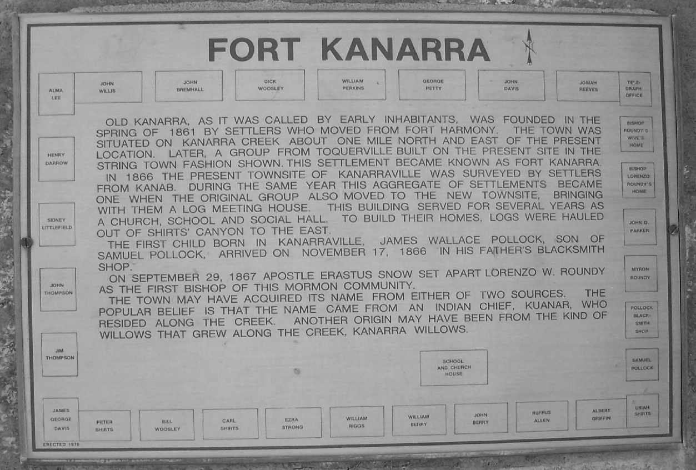
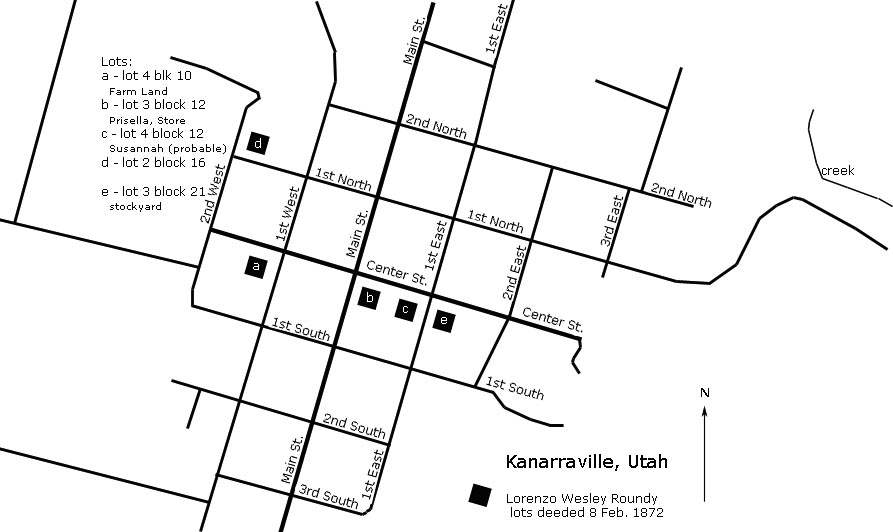

Chapter 8
Now the Kanarra period of Lorenzo's life begins. The settlement of Kanarra or Kanarraville began a few years before the arrival of Lorenzo and his families. According to the histories published about Kanarra, the community was first settled in the spring of 1861 by Elisha H. Groves. It was located on Kanarra Creek about one mile north and east of the present town.1 Other families came from nearby settlements, such as Toquerville which added to the community. According to another history, one factor leading to the settlement of Kanarra was the "Great Rain of the Winter 1861 and 1862." During that storm, Fort Harmony literally started falling apart, with the adobe dissolving away. John D. Lee was determined to continue at the fort, reportedly remaining in his wet clothes for eight days and nights. Two of his children died when part of the roof collapsed. John took half of the people from Fort Harmony to settle New Harmony and the other half moved to Kanarra.2

Shortly after Lorenzo and his families arrived in July 1866, Lorenzo and his boys returned to Mount Carmel to harvest the crops planted there earlier in the year.3 Within a few months, he was ordained the bishop of the ward there.4 It is reported that he moved the town to a different location for better protection from the Indians.5
In his experiences on the Indian Mission in the 1850's, Lorenzo interacted quite a bit with John D. Lee. Lee had set up his home and families in the Harmony and New Harmony area. Many of Lee's family grew up and continued to live in the area, including in the Kanarra Ward where Lorenzo presided. Because of this, and with the close proximity between Kanarra and New Harmony (about 7 miles distant), there are a number of occasions recorded in Lee's diaries of the time. Because of this we have some details of Lorenzo's life, and particularly his experiences as a bishop in these frontier times.6
Later in the year of 1866, the telegraph lines were being laid from northern to southern Utah Territory. On December 9th, John D. Lee records working at putting up the poles in anticipation of President Brigham Young coming later in the year, hoping to spend the winter in Saint George, desiring to have telegraph communications in place for that winter stay. They had the goal of having the poles in place by the 20th. 7 In report, dated Feb. 18, 1867 by John C. Clowes, the cities and extent of the running of the wires and setting up of offices are detailed. The wires arrived in Kanarra on January 12th, 1867. It is interesting to note that upon finding no suitable office for the telegraph in Kanarra, they attached the wires to Lorenzo's home. 8
The setting up of telegraph lines into and within the Utah Territory began in about 1861. 9 Brigham Young encouraged the development of the railroad and telegraph systems early on and the church was instrumental in supporting a lot of the work, both financially 10 and in donated labor, as is noted in the John D. Lee diary entries.
It is in question whether Lorenzo was ordained the Bishop in late 1866 or in the Spring of 1867 (see footnote 4). In John D. Lee's diary, he still refers to him as the Branch President. In any case, however, Lorenzo served as the presiding authority and common judge. Throughout his time presiding in Kanarra from 1866 through the end of his life in 1876, there are a number of recorded matters where he sat in judgement. On February 12th, 1867, A matter was brought to Lorenzo Roundy for judgement, after which it was reported: "Prest. L. Roundy said that he was on hand to deal with any Member of his Branch for Misdeameanor towards any of his Neighbors upon complaint being made. Further he had expressed himself previous that he wantd no Person to take his remarks for a Text, for he knew that Bro. Lee would See the matter Properly adjested as soon as he became acquainted with it, &c." 11 Undoubtedly, there were matters other than those connected with Brother Lee, but since those are the ones best documented, they will be listed in the later parts of this history. John D. Lee seemed to find himself at odds with others in many occasions, but it is interesting that in pretty much every case, Lorenzo ended up making rulings that favored Brother Lee. John D. Lee had a daughter and son-in-law who lived in Kanarra, so he visited often, attended meetings there12 and even transacted business with Lorenzo13 in Kanarra.
As the authority in Kanarra, Lorenzo reported conditions to the Brethren in Great Salt Lake City14. There were also conferences held in "Dixie" where he attended as the local ward leader.15 Also, because of his standing, but probably even more because of a personal friendship with Brigham Young, Lorenzo was usually visited by the President on his way to, or from, Saint George. A detailed report of President Young's visit on May 8th, 1867 gives some interesting details of Kanarra and Lorenzo:
"President Young's Trip South -
"A published report of Joseph F. Smith and Claudius V. Spencer
" … [ after going south to Saint George and then back up north]
"Tuesday we proceeded to Harrisburg … Toquerville … Wednesday [the 8th of May, 1867] on to Kanarra, where the company reunited and held meeting. This place is not yet a year old, Lorenzo Roundy (now Bishop) was the first who located on the site. About thirty families (forty men) have built some thirty-five dwellings, facing a public square of four acres, which with little exertion can be made to answer the purpose of a fort. About 500 acres are already fenced, and quite an amount of it planted in grain.
"This place may be called in the temperate zone of Utah. Kanarra lies close under the brow of the mountain, 13 miles south of Cedar City and 24 miles north of Toquerville.
"We remain, as ever, your friends, S. & S."16
Shortly after this visit from President Young, on 1 June 1867, Annie Isadore Roundy was born to Prisella. Having gone through such difficulties over the past year and a half, including the loss of one child, Betsey, to scarlet fever, it was surely a blessing to see a new life come into this family. Lorenzo and Prisella at this time had 5 children under 9 years of age. Susanna's family had children ranging in age from 6 to 19. Lorenzo's oldest son, Myron, and his wife Mercy Ann Deuel were also in Kanarra with their son. Myron. Their next son, William Wesley would be born in a few months, giving Lorenzo his second grandchild. Considering the duties of a bishop and community leader, the responsibilities of supporting his large family in a new place must have been ponderous.
In the arid west, water rights and disputes were often a concern, more especially for a bishop and judge in a frontier community. John D. Lee brought up a matter concerning water rights and the use of irrigation shares and Bishop Lorenzo Roundy presided in judgement.17 All of this was in New Harmony. Apparently, John Lawson dammed up the canal in order to have better water flow to his property, but John Lee tore apart the dam in order that the water would flow better for everyone else. In the presentation of the case, Brother Lawson made a comment about the action on the part of John Lee as being cruel and damaging to his family, using the phrase "Even a worse man then the Mountain Meadow Murderer" in his language. This is interesting to note because John Lee was later the only one convicted in the Mountain Meadows Massacre trials. It appears that the local people recognized Lee as having a contributing role in the massacre. In the end, Lorenzo found in favor of John D. Lee and against John Lawson. This would not be the end of disputes between the two where Lorenzo would be called on to make serious judgements.
Among the more delightful duties of Bishop Lorenzo were the town festivities. The twentieth anniversary of the pioneer arrival to the Great Salt Lake valley was celebrated throughout the territory. In Kanarra, Lorenzo presided over the celebration and even provided his mill house for the meeting, "the schoolhouse being too small." He also "delivered a short, and very interesting address" at that meeting.18 The following year the celebration was likewise reported, also mentioning "a very interesting oration was delivered by L. W. Roundy." 19 It is a shame that no one recorded his speeches. Among his many other talents and skills, it appears that Lorenzo was also a gifted speaker.
In Centerville, Lorenzo participated in the Davis County branch of the Deseret Agricultural and Manufacturing Society. Either from his past experience or because of his position as the leader of his community, Lorenzo was elected a Vice President of the Fruit Grower's Convention in Saint George in August of 1868.20
Another of Lorenzo's duties was his continuing position with the military established to protect the settlers from the Indians. Though his main involvement and danger was in the earlier years, a message in a telegram, dated Feb. 27, 1869, to "General" Erastus Snow (apostle and presiding authority in Southern Utah) specifies that Lorenzo is a Major in the organization and will be providing infantry, supplies and a wagon for the effort.21
In May of 1869, President Brigham Young and party came south for meetings. The plans, according to the account including a stop for the night in Kanarra. Brigham Young seemed to enjoy his visits in Kanarra. 22 Sara Young Gates, a daughter of Brigham Young wrote the biography, "The Life Story of Brigham Young." She does not mention a specific time, but records a visit when he was passing through Kanarra and Lorenzo insisted that he stay with them. She writes:
"On one trip to the South, the long train of carriages was met at Kanarra, a settlement in Iron County, by Bishop Lorenzo Roundy. As President Young stopped his buggy to greet the people, the bishop was heard to say laughingly:
"President Young, you cannot leave this town to-night. If you attempt it, I will take a wheel off your buggy."
"The Leader turned around and calling back to his family said:
"Bishop Roundy says he will take a wheel off my buggy if we do not stop here to-night. I guess we had better stop."
"Stop they did, and in no time the band was serenading the party. The chickens were squawking, fires blazing, corn bread was in course of preparation and the freshest and best buttermilk was ready for the President's table. A meeting was held there that night to a crowded house and next morning the President proceeded on his way south to St. George."23
It appears that after returning from Saint George, a report was published describing the conditions in the South. In the summer 1869, there was a considerable amount of damage done by grasshoppers. The most damage was in the area between Parowan and Kanarra, including Cedar City, which suffered "a vast amount of damage." 24 In addition to problems of Indian attack and drought (and water rights issues) the settlers also had to deal with pests.
Amid all the stress of just surviving, the people of Kanarra and the church leaders of the region were still concerned with studying the Gospel and keeping strong spiritually. Later in 1869, in Cedar City and the surrounding area, they organized a School of the Prophets. President Erastus Snow organized the School and set apart Bishop Lunt of Cedar City as the president with Lorenzo Roundy as vice-president.25 They were to meet every other week in various locations in the area. This was yet another responsibility for Lorenzo. As with everything else in his life, Lorenzo supported his leaders and served the Lord in any way required of him.
Lorenzo's next child, David Alonzo, was born to Prisella on September 5, 1869
As mentioned before, Lorenzo was called upon to judge in matters in the community as bishop. In November of 1869, a particularly serious altercation came about between John Lawson and some of his family members, against John D. Lee and his family. This time the dispute appears to be instigated by Lawson in cutting down some trees planted by Lee. The entire incident is reported in Lee's diary, so it probably has a bias in Lee's direction, but based on the ruling by Lorenzo, the whole matter appears to be fairly damning of Lawson. The incident moved from the landscape destruction quickly to weapons being brandished and death threats traded, including a drawn pistol and a raised axe. Two wives of Lee came to the rescue by dousing Lawson and his unsuspecting party with hot water. Lee and Lawson ended up threatening each other with writs and it ended up in a council presided over my Lorenzo. In the end, Lawson was required to pay a fine of $25 and the cost of the suit.26
As in the summer of 1869, there was concern about the crops in 1870. Lorenzo visited the Salt Lake Valley in June and reported the conditions, basically that there were not any grasshopper, but that the waters were low and there was a possibility of a drought. He said that the streams were lower than he remembered in years.27
Starting in the Fall of 1870 and through the next years, a more concerted effort was made by church leaders to have the area of southeast Utah and eventually into northern Arizona explored for possible settlement by the Latter-day Saints. Brigham Young came south in September 1870 and worked with the men chosen to make this journey. Brigham Young arrived on Sept 3rd and then with the group went across the mountains to the upper Sevier valley on September 5th. Lorenzo was listed as the "Road Commissioner with instruction to take the Guard, locate & work New Roads." Jacob Hamblin was the "Guide." From Panguitch, the group travelled south towards Kanab, passing by Upper Kanab, where John D. Lee reported "Here we encamped at Bishop Roundy's old Station on a handsome piece of Meadow land." 28
A few days later, as the group was in the Paria River area, Lorenzo narrowly escaped being seriously injured in an accident. It was described both by John D. Lee and A. Milton Musser. They were at a spot where they camped in the Paria River Valley, mentioning a stone house on the Pariah River, built by Peter Shirts. Then, in Musser's words, "In descending a very abrupt and somewhat winding mountain to a 'wash' below, Bishop Roundy came very near meeting with a serious accident. As he was passing over a narrow turn in the road, one of his animals stumbled, making a fearful plunge down the bank, carrying with him the other horse, the carriage and its occupants, Bp. Roundy and R. Ashby, a distance of about twenty feet, when the whole 'outfit' anchored till help rescued them from their perilous position. Another plunge of a few feet would have carried the horses and carriage over another precipice, of fearful grade and depth, which could not but have resulted in the total wreck of animals and vehicle. As it was , Bp. Roundy, in jumping from the carriage received but a slight embrasure on the arm and head while Elder Ashby got off entirely free. The horses were a little bruised and the carriage somewhat injured. We were soon on our way again, thanking Heaven that nothing very serious happened." 29 John D. Lee called it a miraculous accident and also mentioned that Major John Wesley Powell, of the United States Geological Survey, who was with the group, said "that he saw a miracle." 30
In the process of this journey they returned to Kanab. There was a conversation concerning the setting up of a "Portable Steam Saw Mill," using a mill that was on its way there. Lee reported the discussion mentioning his assertion that Lorenzo had set up a mill that cost less money. 31 P. T. Reilly, in his Lee's Ferry book explained the situation, "Lee was uncommonly blunt in pointing out that the sawmill was badly worn, and Bishop Roundy had a new mill delivered for $3000. After some haggling and presidential arm-twisting, they worked out a deal and signed an agreement." 32
The expedition continued from Kanab to Pipe Springs and on to Toquerville and back to Kanab where they worked to get the steam mill working, continuing well into October. All this was recorded in John D. Lee's diary. 33 Lee was not clear as to when President Young returned to Salt Lake City.
The Mountain Meadows Massacre took place in September 1857. It happened near Harmony, Kanarra and Cedar City and the events involved with the subsequent investigation and trials affected the people of the region. As mentioned in a previous paragraph of this chapter, people were aware of the possible implication of John D. Lee. B. H. Roberts, in writing the Comprehensive History of the Church of Jesus Christ of Latter-day Saints wrote about the process. He stated that "through some representations made by Elder Erastus Snow and Bishop L. W. Roundy, who had been meantime investigating the crime of the Mountain Meadows, President Brigham Young became convinced of the absolute responsibility of John D. Lee in that affair." President Young received this information during his visit to Southern Utah in 1870, "and on his return to Salt Lake City the matter was taken up at the meeting of the twelve apostles, the facts laid before them, and President Young himself proposed, and all present unanimously voted, to excommunicate John D. Lee and Isaac C. Haight. President Young gave instructions at that time that John D. Lee should, under no circumstances, ever be again admitted as a member of the church." 34 According to Lee's diary35 and also mentioned in Reilly's book36, the excommunication took place on October 8, 1870. In a recorded conversation between Lorenzo and John D. Lee during a New Years party in January 1871, Lee records that Lorenzo called Lee "Rough as an old grizzly," and in reponse, Lee accused Lorenzo of poisoning the mind of President Young against him. 37
Through these years, the church held conferences in Saint George in May and November. (See footnote 15 of this chapter.) For the most part, Lorenzo was reported merely as attending, but in May of 1871 and also in June of 1872 he is listed as having been one of the speakers.

On February 8, 1872, Lorenzo recorded the deeds to his land in Kanarra.38 Prisella's house and the store were on lot 3 of Block 12 (currently the northwest corner of the block bounded by Main Street, Center Street, 1st East and 1st South. It is supposed that Susannah's lot is the one next to it, to the east and across the street (1st East) on the northwest corner of that lot, is where the stockyard was located.
Later in 1872, two family-related events happened in Lorenzo's life. On June 16, 1872, his daughter, Lydia Annis Roundy was born and a couple of weeks later, on July 2, 1872 his father, Shadrach Roundy died.

Priscella Parrish Roundy, 3rd wife of Lorenzo Wesley Roundy, Seated in Center, with children:
(Standing, l. to r.) Heber Lorenzo, Annie Isadore (Mrs. Henry W. Davis), Samuel H., Lydia Annis (Mrs. Josiah F. Reeves), Joel Jesse; (Seated, left) Fannie Jane (Mrs. John H. Willis; (Seated, right) Sarah (Mrs. James T. Berry
1 History of Kanarraville, from the town centennial program, published July 2, 1966, Kanarraville, Utah.
2 The History of Kanarraville Town, Marilyn Lovell, Taken from original publication of 1959, this edition published June 1980 by Kanarraville Utah Beta Chi Chapter of Beta Sigma Phi; p 6
3 Mounteer, Lorenzo Wesley Roundy Memorial program, p 9.
4 Fall, 1866 - "President Erastus Snow took Lorenzo to Salt Lake where he ordained Lorenzo a bishop." (Mounteer, p 9 - referring to Mrs. Malinda Parker Roundy, "Pioneers of the Early Days," Kane County Standard, 30 May 1930); also recorded in Lovell, The History of Kanarraville Town, p 7
The Kanarraville Town History also records that through the entire ten years Lorenzo served as Bishop, his counselors were: Albert B. Griffin, 1st Counselor, John H. Willis, 2nd Counselor and Samuel Pollock, Ward Clerk. ibid, p 12.
It should be noted, however, that another reference states that Lorenzo was ordained the Bishop of Kanarra by erastus Snow on April 29, 1867 ("Uncle Dale's Old Mormon Articles: Misc. Utah Papers, 1866-1899")
5 ibid, p 7; Also, in the biography of John Wesley (Dick) Young, it states:
"Elisha H. Groves presided at the Kanarra Branch until the fall of 1866. It was at that time that the Indians became troublesome, and Lorenzo W. Roundy, who in that year took charge of the community, decided to move the town to its present location where the inhabitants built their houses inside a stockade." web location: http://www.lofthouse.com/USA/Utah/washington/history/d-young.html
6 "A Mormon Chronicle - The Diaries of John D. Lee, 1848-1876," Volume II - Cleland & Brooks, University of Utah Press, Salt Lake City, Utah, 1983; p 37: "Wed., Dec. 5th 1866. Drove to Cannaraville where we all Brakefastd with M. H. Darrow, my son in law. My Daughter Marry presented me Some good Brandy which I used for medical purposes. Pres. L. Roundy came in & Spend Several hours with me. While here I done considerable buisiness & reached home about dark all safe."
7 ibid, pp 37-38, "Sun., Dec. 9th, 1866 - I sent Charly & Wm. Orson to finish setting my Poles least I should [be] found on the delinquent list. About Sun Set Bishop Lunt, Arthur & Prest. L. Roundy arrived and held meeting. The Bishop sent me his compliment & requestd me to come to meeting. I did so. When I entered the Meeting House and Bishop Espied me & called me up to the stand, or where it should be, to Sit with them. They delivered a good discourse & made [?] a skettch & the first message that was sent over the wires from Ogden City to Prest. B. Young, g.s.l.c, & his reply dedicating the work unto the Lord, also Stating that Prest. E. Snow had requesting him & Elder Roundy to see that the balance of the Poles were all put up by the 20th, inst., as the co. putting up the wires were at Fillmore & crowding the work. The Prest. B. Young would come according to promise as soon as the wires are up in working order that he could communicate with his clerk in his office & spend the winter in St. George &c. I dismissed the meting by request of Bishop Lunt. Prest. L. Roundy came home & spent the Night with me. The Bishop & Arthur said they would Brakefast with me. I spent the Evening agreeably."
8 LDS Journal History, 18 Feb. 1867, p 2: " I arrived in Parowan 10th [January 1867] and opened office, Wm. B Dougall of Salt Lake takes charge. Arrived at Kanarra 12th people not expecting an office had no suitable place to put it, I ran wires into President Roundey's temporarily. Geo Peart of Salt Lake takes charge, an office was built and we fixed it permanently as we returned. I arrived at Toquerville 13th no place to put an office. … [the report continues with details for St. George ] ... We left for Salt Lake Jan. 30th and arrived Feb. 16th, calling at all of the offices, fixing up Cove Creek office, Clarence Merrill of Fillmore takes charge. Moving Kanarra instruments to a house the people have built for them. Left offices in a s good condition as possible. Many supplies are still needed in most of the southern offices. I however requested the Bishops to supply the operators whatever was needed for the present. ..."
9 Deseret News 1861-09-11: "... The line from Fort Churchill to Ruby Valley is nearly completed - the wire being already up to Diamond Springs' Station, twenty five miles to the west of Ruby. ...
"The holes are reported to be almost all dug between this city and Ruby, and the poles are being planted with considerable rapidity. Some difficulty has been experienced in procuring poles for sixty or seventy miles east of Ruby, but with this exception the poles will probably all be up on the entire western line in fifteen days from the present time. ... "